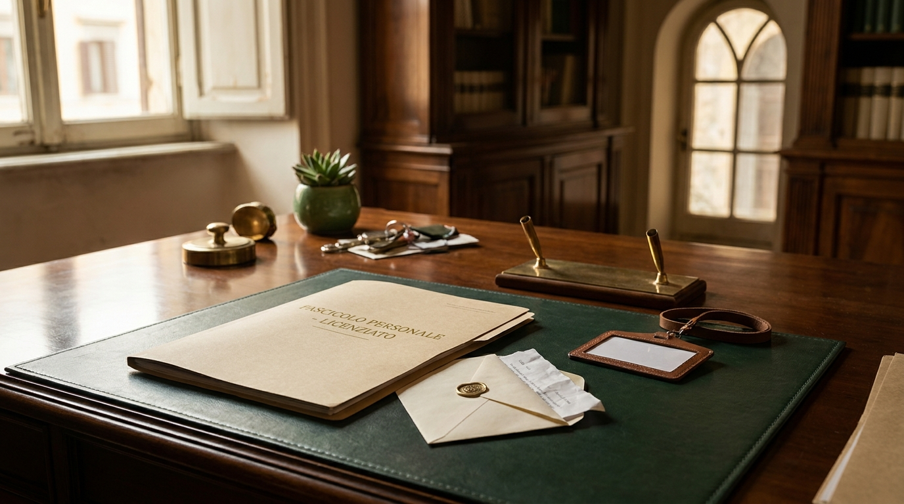

Licenziamento ritorsivo: quando è nullo e come si prova
Il licenziamento per ritorsione è nullo, ma solo a condizioni precise. La Cassazione richiede che l'intento di rappresaglia sia il motivo determinante ed esclusivo del recesso, e pone l'onere della prova interamente sul lavoratore. I sospetti non bastano: servono elementi concreti. Vediamo cosa dice la giurisprudenza e come muoversi.

Il caso
Un lavoratore che subisce un licenziamento dopo aver presentato un esposto, denunciato condotte irregolari o rifiutato richieste illegittime sospetta spesso una rappresaglia. Il diritto conosce questa fattispecie come licenziamento ritorsivo (o "per vendetta"): un recesso fondato non su ragioni reali, ma sull'intento di colpire il dipendente per una sua condotta legittima.
La qualificazione non è automatica. La Corte di Cassazione ha tracciato confini rigorosi, soprattutto sul piano probatorio.
Inquadramento normativo
Il licenziamento ritorsivo rientra nella categoria del licenziamento nullo per motivo illecito determinante, ai sensi dell'art. 1345 del Codice civile, richiamato in materia di lavoro. La nullità comporta la tutela più forte prevista dall'ordinamento: reintegrazione nel posto di lavoro e risarcimento del danno.
La giurisprudenza di legittimità ha fissato un principio costante. Il motivo ritorsivo, per determinare la nullità, deve essere l'unica ed effettiva ragione del recesso (Cass. sez. lav. 26395/2022; 3986/2015; 5555/2011; 14816/2005). Non basta che la rappresaglia sia concorrente con altre motivazioni: deve essere esclusiva e determinante.
Ne deriva una conseguenza pratica rilevante. Se il datore di lavoro dimostra l'esistenza di una causa lecita e autonomamente idonea a giustificare il licenziamento — ad esempio una giusta causa o un giustificato motivo reali — il carattere ritorsivo viene meno, anche qualora un intento ostile fosse presente.
Implicazioni pratiche
Il punto più delicato riguarda l'onere della prova. La Cassazione lo colloca interamente in capo al lavoratore. È chi lamenta la ritorsione che deve dimostrare:
- l'esistenza dell'intento ritorsivo del datore;
- il fatto che tale intento sia stato il motivo unico e determinante del recesso;
- l'inconsistenza o il carattere pretestuoso delle ragioni formalmente addotte.
Si tratta di una prova impegnativa. I giudici escludono che possano bastare semplici sospetti, coincidenze temporali isolate o congetture. Serve un quadro di elementi concreti: la cronologia dei fatti, l'assenza di ragioni effettive, eventuali dichiarazioni o comportamenti del datore, atti scritti, testimonianze coerenti.
La prova può essere fornita anche per presunzioni, purché gravi, precise e concordanti. La vicinanza temporale tra una denuncia del lavoratore e il licenziamento, da sola, non è sufficiente; lo diventa se accompagnata da altri indizi che convergono verso l'intento ostile e smentiscono la motivazione ufficiale.
È utile distinguere il licenziamento ritorsivo dal licenziamento discriminatorio. Quest'ultimo (legato a sesso, religione, opinioni politiche, attività sindacale e fattori protetti) gode di un regime probatorio più favorevole al lavoratore, che deve solo allegare elementi idonei a far presumere la discriminazione, spostando l'onere sul datore. Nel licenziamento ritorsivo "puro", invece, questo alleggerimento non opera: l'onere resta integralmente sul dipendente.
Cosa fare in concreto
- Documenta la cronologia. Conserva date ed evidenze di esposti, denunce, reclami o rifiuti che precedono il licenziamento, mettendoli in relazione temporale con il recesso.
- Raccogli prove dell'inconsistenza dei motivi addotti. Verifica se le ragioni formali del licenziamento siano reali o pretestuose: comunicazioni, prassi aziendali, trattamento riservato ad altri colleghi in situazioni analoghe.
- Individua testimoni e supporti scritti. Email, messaggi, dichiarazioni di colleghi possono concorrere a comporre il quadro presuntivo richiesto dai giudici.
- Valuta la qualificazione corretta. Verifica con un legale se la fattispecie configuri una ritorsione o una discriminazione, perché il regime probatorio cambia in modo sostanziale.
- Rispetta i termini di impugnazione. Il licenziamento va impugnato entro 60 giorni con atto scritto, seguiti dal deposito del ricorso o dalla comunicazione del tentativo di conciliazione entro i successivi 180 giorni.
In sintesi
La nullità per ritorsione è una tutela forte ma di accesso difficile. La giurisprudenza chiede al lavoratore di provare che la vendetta sia l'unica causa del licenziamento, non una tra le tante. Consigliamo di costruire per tempo un fascicolo documentale solido e di valutare con attenzione la qualificazione giuridica della vicenda prima di agire in giudizio.
---
*Contributo informativo a cura di Tamburro & Partners - Avv. Giuseppe Tamburro. Non costituisce parere legale.*
Ogni storia di lavoro ha i suoi tempi.
Se gestisci HR e vuoi un confronto su contenzioso, ispezioni o licenziamenti, scrivi allo studio. Ti rispondiamo entro un giorno lavorativo.